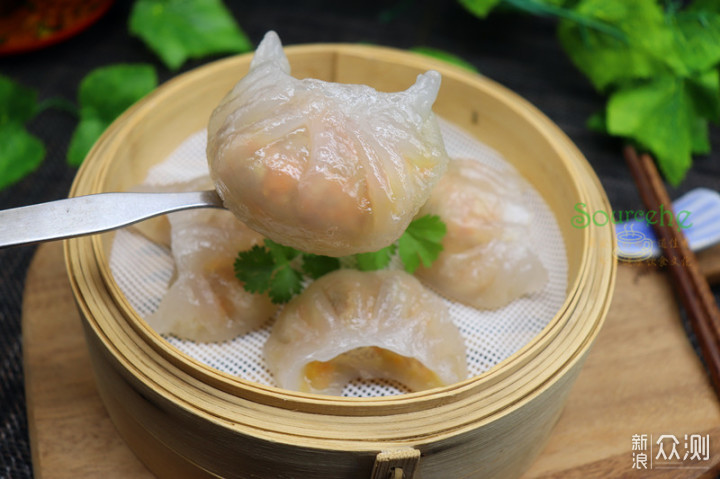
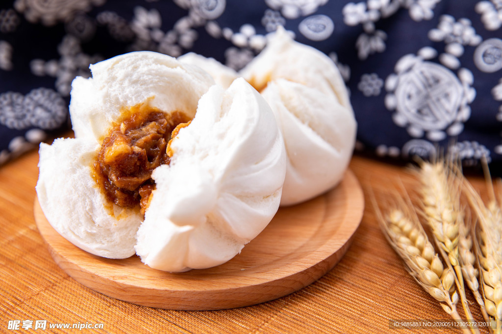

粤式早茶经典品类
粤式茶点分为干蒸类、饺类、包点类、糕品类等，每一类都有代表性的经典点心，以下是最受欢迎的三款：

水晶虾饺
粤式茶点的“招牌担当”，用澄面做的饺皮晶莹剔透，能看到里面饱满的虾仁馅，口感Q弹爽滑，鲜而不腻，是早茶必点的点心。

干蒸烧卖
以猪肉和虾仁为馅，外皮捏成花状，顶部露出馅料，蒸制后鲜香四溢。烧卖的皮软韧，馅料多汁，是粤式早茶的经典咸点。

叉烧包
分为“开口笑”和“闭口”两种，面皮松软香甜，内馅是蜜汁叉烧，甜咸交织。刚出炉的叉烧包热气腾腾，一口咬下去满是叉烧的香味。